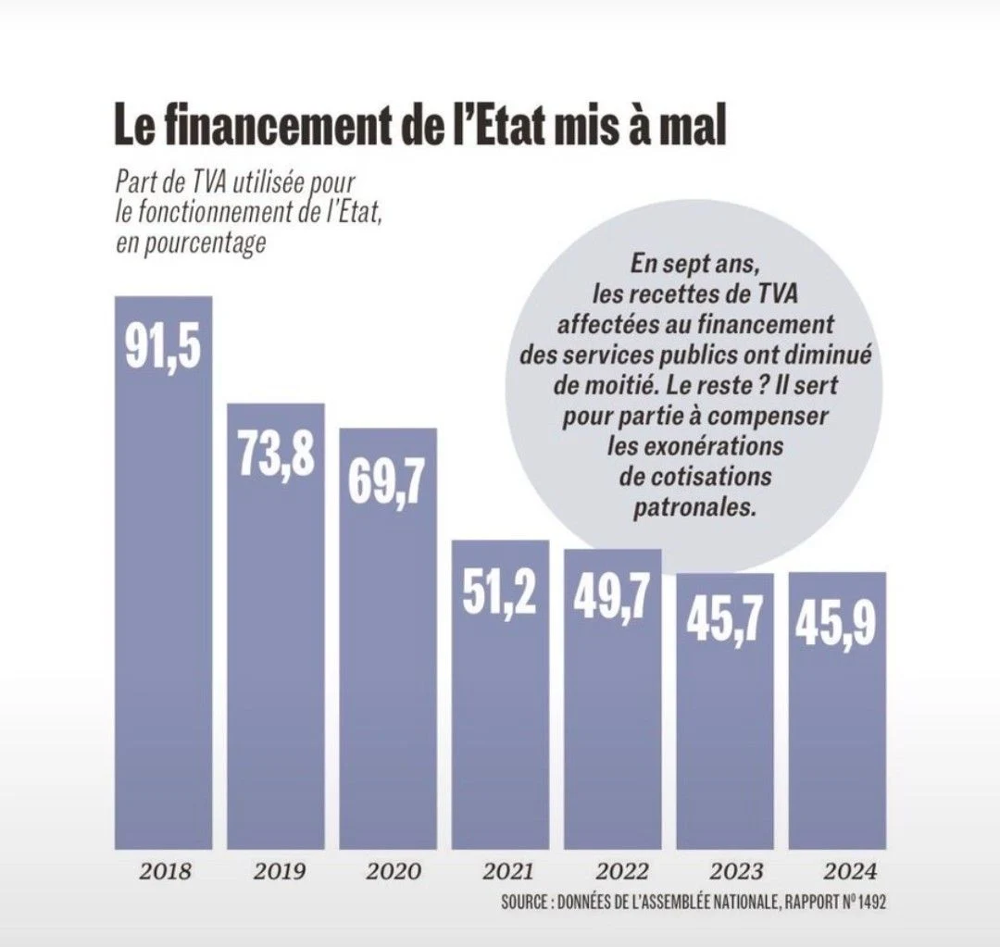

Publication du PCF 79
« Pas assez de moyens pour le service public ! »
Date indiquée par Facebook · 10 août 2026
Texte conservé avec la publication
Pas assez de moyens pour le service public !
On l'a vu encore cet été avec les méga feux en Gironde et le manque de moyens des pompiers. On l'avait vu avec la crise du COVID et la crise continue des services d'urgence.
Le manque de moyens est criant concernant l’hôpital, l’école, la justice et les services publics dans leur ensemble. Si ce manque s'est accentué ces dernières années, ce n’est pas le fruit du hasard : il est la conséquence de choix politiques assumés dans l’affectation de l’argent public…
Les inégalités sont à leur plus haut niveau depuis 30 ans et 9,8 millions de personnes vivent sous le seuil de pauvreté en France métropolitaine, selon l’Insee.
Les aides massives aux entreprises devaient permettre de faire durablement reculer le chômage. Bien que les aides soient passées d’environ 30 milliards d’€ par an dans les années 1990 à 270 milliards aujourd’hui, le chômage vient de remonter à 8,3 %, son plus haut niveau depuis près de 7 ans.
Voilà où mènent les choix macronistes.
Repères éditoriaux
Nous avons lié le manque de moyens des pompiers, de l’hôpital, de l’école et de la justice aux choix d’affectation de l’argent public. Les données et comparaisons chiffrées figurent dans notre texte du 10 août.

Sources
Archive rouge · export Facebook · AR-0002-FB-00713
À lire aussi · Chômage. « L’argent public doit servir l’emploi, pas les licenciements »